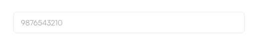
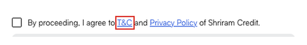
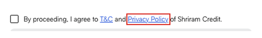
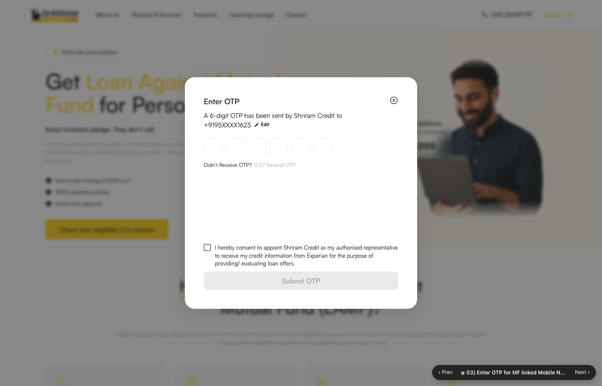
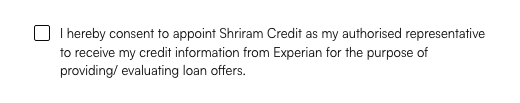
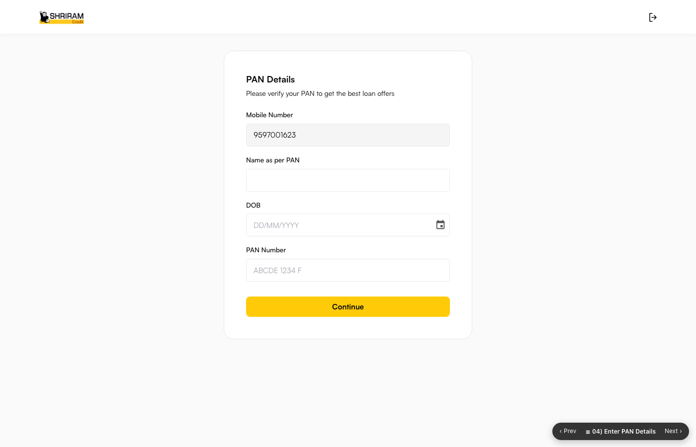

This document is generated from the confirmed discussion log. Sections marked Pending Confirmation are not yet confirmed and must not be treated as final requirements.
Module 1 – Mobile Number Verification
Screen 01) LAMF Landing Page · Screen 02) Enter MF linked Mobile Number
| SL.No | Screenshot | Functionality | Description | Data Points Required | Status |
|---|---|---|---|---|---|
| 1 | User clicking the “Check your eligibility in 2 minutes” CTA in landing page to start the journey | The customer shall access the SCCL LAMF journey through the LAMF URL (https://uatlamf.shriramcredit.in/). On successful access, the system shall load and display the SCCL LAMF Landing Page, which serves as the entry point for initiating the LAMF application journey. Field Name: Check your eligibility in 2 minutes Field Type: CTA (Button) Action: On click, the system shall open the “Enter your MF linked Mobile Number” pop up over the landing page, which is the first step of the LAMF journey. Field Name: Start Your Application Field Type: CTA (Button) Action: Placed below the 8-step “How to Apply” section. On click, the system shall perform the same action as the “Check your eligibility in 2 minutes” CTA and open the mobile number pop up. | Landing Page Accessed: Yes/No Page Access Date & Time: Timestamp CTA Clicked: Check your eligibility / Start Your Application | Confirmed | |
| 2 | User entering the MF linked Mobile Number for the mobile number verification | The system shall display the “Enter your MF linked Mobile Number” pop up over the landing page. While the pop up is open the background page shall remain frozen and shall not scroll; the pop up itself shall scroll only when its content does not fit the screen (for example when the customer has zoomed in). | Mobile Number: 10 digit numeric Consent Accepted: Yes/No Consent Date & Time: Timestamp | Confirmed | |
 | Field Name: (X) Close Icon Field Type: Icon Action: After clicking this, navigate user to landing page by closing this pop up | ||||
 | Field Name: Mobile Number Field Type: Text Field Minimum Character: 10 Char Maximum Character: 10 Char Value Type: User inputs Input Value format: Numeric only Action: User has to enter the MF linked mobile number. Alphabets, spaces and special characters shall not be enterable. A first digit of 0 to 5 shall not be accepted. Validation:
Note: Wording to be aligned with the approved copy (refer Pending Clarification P-01). | ||||
Field Name: (Checkbox) Field Type: Check box Action: User has to click the Checkbox. Once this checkbox is clicked then only the Continue CTA has to be enabled Validation: “Please accept the T&C and Privacy Policy to continue.” – displayed when the customer clicks Continue CTA without ticking the checkbox | |||||
 | Field Name: T&C Field Type: Hyperlink Action: User has to click this hyperlink to view the Terms and Conditions. On click, the system shall display the Terms and Conditions pop up containing a Close (X) icon and an Accept CTA. Content source: https://www.shriramcredit.in/terms-and-conditions Condition: Accept CTA shall close the pop up and tick the consent checkbox. Close (X) icon shall close the pop up without changing the consent. | ||||
 | Field Name: Privacy Policy Field Type: Hyperlink Action: User has to click this hyperlink to view the Privacy Policy. On click, the system shall display the Privacy Policy pop up containing a Close (X) icon and an Accept CTA. Content source: https://www.shriramcredit.in/privacy-policy Condition: Same Accept / Close behaviour as the T&C pop up. | ||||
Field Name: Continue Field Type: CTA (Button) Action: On click, the system shall validate all conditions of this screen. If every condition is met, the system shall trigger the OTP to the entered mobile number and navigate the customer to the OTP verification screen. If any condition fails, the customer shall not be allowed to proceed and the respective validation shall be displayed. Condition: CTA is disabled (grey) until the consent checkbox is ticked. Validation order: consent → mobile number entered → first digit 6 to 9 → 10 digits. |
Module 2 – OTP Verification (MF linked Mobile Number)
Screen 03) Enter OTP for MF linked Mobile Number Verification
| SL.No | Screenshot | Functionality | Description | Data Points Required | Status |
|---|---|---|---|---|---|
| 3 |  | User entering the OTP received on the MF linked mobile number to complete the mobile number verification | On successful submission of the mobile number, the system shall send a 6 digit OTP to the MF linked mobile number and display the “Enter OTP” pop up over the landing page. The mobile number shall be displayed in masked format (+91, first 2 digits, XXXX, last 4 digits). | OTP Entered: 6 digit numeric OTP Verified: Yes/No OTP Verified Date & Time: Timestamp Resend Count: 0–3 Wrong Attempt Count: 0–3 Blocked Until: Timestamp Experian Consent: Yes/No Experian Consent Date & Time: Timestamp | Confirmed |
Field Name: (X) Close Icon Field Type: Icon Action: After clicking this, close the pop up and navigate the user to the landing page | |||||
Field Name: Masked Mobile Number Field Type: Display text Prefilled Value: Mobile number entered on the previous screen, masked as +91 + first 2 digits + XXXX + last 4 digits Action: Display only, not editable | |||||
Field Name: Edit Field Type: Icon with hyperlink Action: On click, navigate the user to the previous screen (Enter your MF linked Mobile Number). The mobile number entered by the user shall be prefilled in the field. | |||||
Field Name: Enter OTP Field Type: 6 single character boxes Minimum Character: 6 Char Maximum Character: 6 Char Value Type: User inputs Input Value format: Numeric only Action: User has to enter the 6 digit OTP received on the MF linked mobile number. Alphabets, spaces and special characters shall not be enterable and the customer shall not be able to enter more than 6 characters. Validation:
| |||||
Field Name: Resend OTP Field Type: Timer with hyperlink CTA Action: The timer shall start at 0:30 and run down to 0:01. At 0 the Resend OTP CTA shall be enabled. On click, the OTP shall be sent again and the timer shall restart. Condition: The customer may resend back to back 3 times. On the 3rd resend the customer shall be blocked and shall not be able to proceed for 15 minutes. The waiting time displayed shall be calculated from the blocked date and time, so a customer returning after 10 minutes shall see the balance 5 minutes. Validation: “You have used all 3 OTP resend attempts. Please try again after N minutes.” | |||||
 | Field Name: (Checkbox) Experian consent Field Type: Check box Action: User has to tick this checkbox to appoint Shriram Credit as the authorised representative to receive the credit information from Experian for the purpose of providing / evaluating loan offers. Condition: Submit OTP CTA shall be enabled only when this checkbox is ticked and all 6 OTP digits are entered. Validation: “Please provide the consent to proceed.” | ||||
Field Name: Submit OTP Field Type: CTA (Button) Action: On click, the system shall check all the conditions of this screen. If every condition is met, the system shall verify the OTP, trigger the Experian API with the mobile number to retrieve the credit score, and navigate the customer to the PAN Verification screen. If any condition fails, the respective validation shall be displayed and the customer shall not be allowed to proceed. Condition: 3 consecutive wrong OTP attempts shall block the customer for 60 minutes, with the remaining time calculated from the blocked date and time. While blocked, the OTP boxes, consent checkbox, Submit OTP and Resend OTP shall be disabled. Validation: “You have entered an incorrect OTP 3 times. Please try again after N minutes.” | |||||
| 4 |  | On successful mobile number verification the customer lands on the PAN Verification screen | On successful OTP verification the system shall navigate the customer to the PAN Verification screen. The mobile number entered by the customer shall be carried forward and displayed as a non editable field. The Experian credit information call shall be triggered in the background; the customer shall not be made to wait for the response. Field level requirements for this screen are yet to be confirmed (refer Pending Clarification P-06). | Mobile Number: carried from Module 1 Experian API Triggered: Yes/No Experian Response: TBD | Pending Confirmation |
Integration Requirements
| ID | Integration | Purpose | Trigger | Input | Expected Output | Success Behaviour | Failure Behaviour |
|---|---|---|---|---|---|---|---|
| INT-001 | Experian | Retrieve credit information / credit score for evaluating loan offers | On successful OTP verification (Module 2), after the customer gives the Experian consent | Customer mobile number | Credit score / credit information – TBD | Customer proceeds to PAN Verification without waiting for the response | TBD – Confirmation Required |
| INT-002 | OTP Service Provider – TBD | Send and verify the 6 digit OTP for the MF linked mobile number | Continue CTA on Module 1; Resend OTP CTA on Module 2 | Mobile number | OTP sent / verification result | Customer proceeds to PAN Verification | TBD – Confirmation Required |
Pending Clarifications
| ID | Module | Clarification Required |
|---|---|---|
| P-01 | Module 1 | Validation message wording: the shared sample PRD carries “*Required”, “*Invalid mobile number” and “Error: Invalid phone number”. The messages currently built follow the wording confirmed in discussion on 22-09-2026. Confirm which set is approved. |
| P-02 | Module 1 | Does the Continue CTA call an OTP send API at this point, and what is the failure behaviour? |
| P-03 | Module 1 | Any backend check on the mobile number at this stage (existing customer, ongoing application, blacklist)? |
| P-04 | Module 2 | OTP validity / expiry period. |
| P-05 | Module 2 | Resend and wrong attempt blocks to be enforced server side against the mobile number (currently held in the prototype browser storage). Confirm reset conditions for the counters. |
| P-06 | Module 3 | PAN Verification screen: field level rules, PAN format validation, name as per PAN matching logic and DOB / age rule. |
| P-07 | Module 2 | Experian failure / timeout behaviour and the effect of the score on eligibility and offers. |
Screenshots are taken from the clickable LAMF prototype hosted locally at http://localhost:8080.